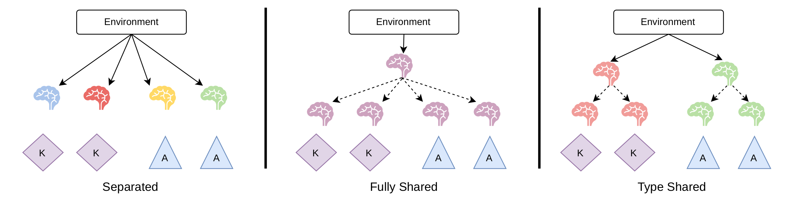
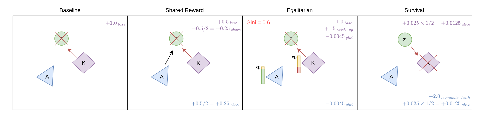
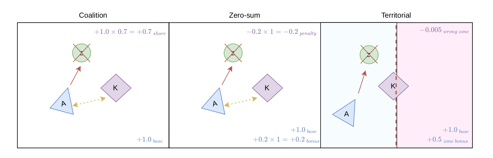
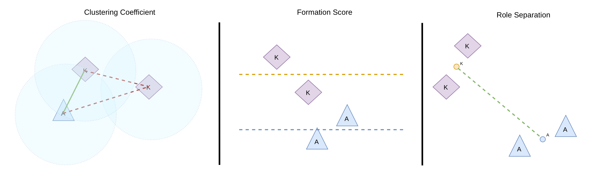

Emergent Coalitions in MARL
Bachelor's thesis. Can a small heterogeneous team of RL agents learn to coordinate — not because we told them to, but because the reward made it worth it?
Do different reward functions produce genuinely different coordination styles, or just shift performance up and down?
Do intuitive proxies (focus fire, cohesion, behavioural diversity) actually predict which teams survive?
How much of what emerges is reward design, and how much is the environment's mechanics?
MARL, briefly
Multi-agent RL extends single-agent RL to settings where several agents share one environment. Three things get harder at once: non-stationarity (each agent sees the others as part of the environment, and everyone learns at once), credit assignment (one team reward, four agents — who caused it?), and partial observability (agents see only a local window of the map).

The MARL loop. Joint actions modify a shared environment state.
Training uses Multi-Agent PPO under the Centralized Training, Decentralized Execution paradigm. A centralized critic sees the full global state during training; each decentralized actor only sees its own local observation. At deployment, the critic is gone — agents act on local information alone.

MAPPO data flow. Rollout buffer → local obs to actor, global state to critic → GAE → clipped policy update.
Agents can share weights. Three variants are compared here: non-shared (independent nets), type-shared (one net per role — the primary setup), and fully shared (one net for everyone).

Non-shared · type-shared · fully shared. Same brain colour = same network.
The environment
Knights, Archers, Zombies — a PettingZoo grid-world where knights and archers defend the bottom of the screen from descending zombies. Four agents, two roles, six discrete actions.
The original version was too easy to solve trivially, so it was customized: boss enemies every 200 steps scale a wave counter that raises zombie/boss HP; a leveling system gives XP and HP per kill so falling behind makes you weaker; and shielded zombies spawn that only knights can break — kill all knights and shielded zombies become unstoppable, which forces mutual dependence.

Custom KAZ with leveling, shielded zombies, and a boss tier.
The original PyGame version was too slow for ~328M-frame runs, so the environment was rewritten in JAX as pure functions over immutable state, then jit-compiled and vmap-ed across 256 parallel environments. ~130k FPS on a single GPU; a full training run finishes in under four hours.
Seven reward schemes. Mechanics, observations, and termination stay fixed. Only the reward function changes — reward design as the experimental lever.
Baseline. Only base kill rewards. Any coordination here comes from environment structure, not incentives.
Shared Reward. 50% of kill rewards pooled between attackers. Archer kill? Nearby swinging knight gets a cut.
Egalitarian. Penalizes XP inequality (Gini) and gives the lowest-XP agent a catch-up bonus.
Survival. Per-step alive bonus plus a −2.0 hit to everyone when a teammate dies.
Coalition. 70% of a kill is shared with alive allies within 200 px. Explicit spatial coalition bonus.
Zero-Sum. Killer gains, other agents split an equal penalty. Helping a teammate hurts you.
Territorial. Screen split in half. Archers own left, knights right. Bonus inside your lane, penalty outside.

Baseline · Shared · Egalitarian · Survival. Arrows = attacks; red = killing blow.

Coalition · Zero-Sum · Territorial.
Measuring what emerged
Two teams can reach the same total reward through completely different social structures. Reward curves can't distinguish them. So: twelve post-hoc metrics on evaluation trajectories, grouped into three themes.
Spatial structure. Clustering coefficient (pairs within 200 px), formation score (knights in front of archers?), role separation (distance between role centroids), coalition lifetime median (how long pairs stay within 350 px).

Clustering · formation · role separation, visualized on a single frame.
Coordination & engagement. Focus fire score (multiple agents targeting the same enemy?), System Neural Diversity (JS divergence between agents' action distributions), knight close-commit rate (do knights commit when close?).
Protection & balance. Unsupported archer exposure, survival ratio per role, knight HP bleed rate, Gini coefficient of late-episode XP.
A custom replay browser (SvelteKit) complements these — frame-by-frame playback with toggleable metric overlays, mostly used to sanity-check that each metric actually matched the behaviour it claimed to measure.
Training & analysis
Seven reward policies × five seeds × type-shared parameters × 400 px vision → 35 primary runs, plus 35 unlimited-vision runs, 70 across alternative parameter-sharing paradigms, and 35 for an environment ablation. Each run: 10 000 MAPPO updates, 256 parallel environments, ~328M frames.
Pick a policy. Each reward scheme produced a measurably different coordination regime.
Survival Shared Reward Coalition Baseline Egalitarian Zero-Sum Territorial
Results.
Final bars Training curves Vision radius Param-sharing

Final deterministic evaluation — 12 metrics, 7 policies, 5 seeds each. Bars = mean, error bars = std.
Centroid heatmaps. Where does the team's centre of mass spend its time?

Survival holds a wide horizontal band deep in the map. Coalition stays compact up top. Baseline and Zero-Sum are near-identical. Territorial never lands a clean split.
What actually predicts durability. Spearman correlation with episode length, across all seed-level evaluations:
knight survival ratio +0.83
focus fire score −0.80
Gini coefficient +0.75
knight HP bleed rate −0.69
knight close-commit rate +0.63
unsupported archer exposure −0.60
Focus fire and SND — the first things you'd guess would predict coordination — are negatively correlated with episode length. The strongest predictor is knight survival. After removing between-policy variance, spatial metrics lose all significance. What carries team durability is knight-side burden management, not surface coordination signals.
The twist: archers can break shields. If knight-survival dominance is real, it should weaken when archers can also break shields. All seven policies re-trained under that rule:
Shared Reward 608.8 → 668.3 now best
Coalition 583.3 → 633.8
Territorial 431.7 → 525.2 biggest gain
Survival 701.1 → 572.9 loses its lead
The same reward functions produce different spatial organizations under different environment rules. Survival's separated frontline-backline style was an adaptation to the shield asymmetry — not an inherently better coordination regime.
Cross-play & leave-one-out. Swap archers from one policy with knights from another: 41 of 42 off-diagonal pairings perform worse than self-play. These regimes are genuinely distinct, not interchangeable. Remove one agent, measure the drop:
Survival — knight removed −451 steps
Shared Reward — knight removed −360
Coalition — knight removed −321
Territorial — knight removed −122
Shared Reward — archer removed −2
Zero-Sum — archer removed −4
Every policy is knight-critical. Archer importance depends strongly on the regime.
What this actually means
Reward design doesn't just shift performance — it selects which coordination regime stabilizes. Survival found a separated frontline-backline. Coalition packed tight. Shared Reward became aggressively spatially spread. Each is competitive through a different mechanism.
The intuitive proxies — focus fire, behavioural diversity, spatial cohesion — describe which regime a policy occupies, not how well it performs. What carries durability is knight-side burden management. And that itself only holds because of a specific environment asymmetry; relax it and the best regime shifts.
Type-shared parameters beat both alternatives for every reward scheme. Limited vision (400 px) helped five out of seven policies — more information is not always better; often it's just noise that distracts from the local decisions that matter.
For the full story — RL foundations, MAPPO derivations, hypothesis evaluation, ablations, and limitations — read the thesis.